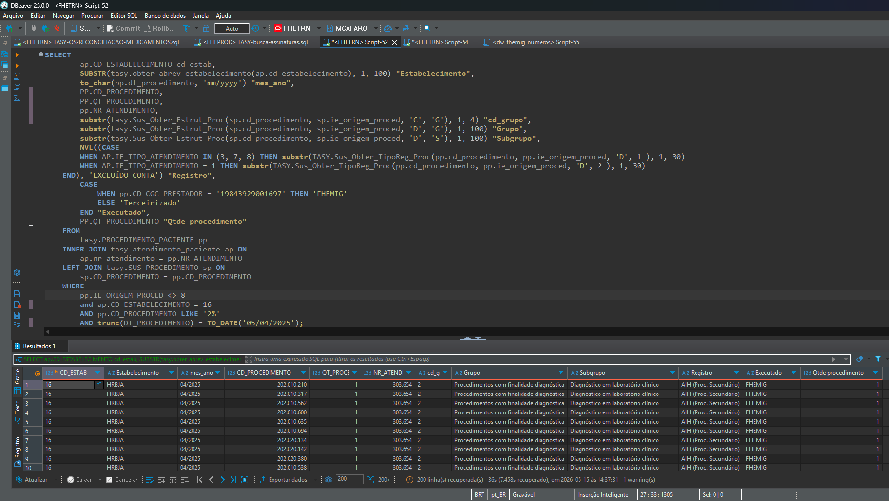
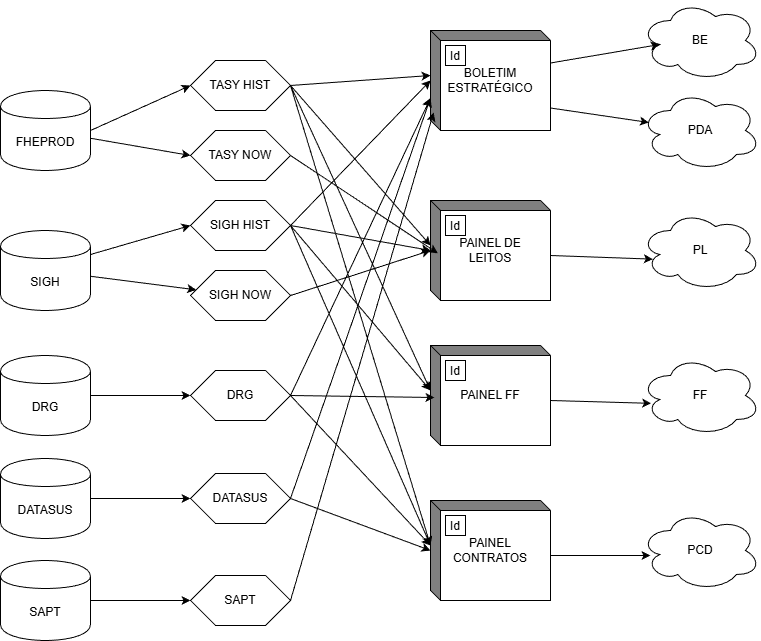

O Incidente
O Incidente
O que houve?
Dia 05/05: Consultas da CINFO derrubam o ambiente FHEPROD.
Este incidente gerou o acionamento imediato pela GTIC e pela Phillips, evidenciando uma fragilidade crítica em nosso fluxo atual.
 Diagnóstico
Diagnóstico
Qual é a situação?
- A CINFO atua em um ambiente hospitalar crítico (Sistemas ERP/Tasy) que não permite impactos de performance.
- Crescimento acelerado dos BIs: BE, Leitos, FF e Descentralização.
- Exigência de agilidade, confiabilidade e escalabilidade.
Termos Técnicos
Atualmente não temos Staging (camadas intermediárias).
ERP (FHEPROD) → Power BI ❌
ERP → STAGING → Power BI ✅

 Cenário Atual
Cenário Atual
Com quais recursos a CINFO trabalha hoje?
Arquitetura de Dados
- 3 bancos OLTP: FHEPROD (Real), FHEHOM (Dump Março) e FHETRN (Dump Março).
- Ausência de ODS (Operational Data Store): não temos camada analítica intermediária dedicada (staging).
- Staging: tabelas derivadas e estruturadas para análise, abastecidas a partir do ERP.
Consequências:
- Uso de banco de produção (OLTP) para fins analíticos (OLAP).
- Sobrecarga: o Tasy foi feito para transações rápidas (inserir/atualizar), não para varrer milhões de linhas ou cruzar tabelas gigantes.
- Risco de lentidão ou indisponibilidade do sistema hospitalar.
- O problema não é a existência dos BIs — é que eles estão ligados no banco errado.
 Cenário Atual
Cenário Atual
Quais são os processos de trabalho atuais da CINFO?
Processos CINFO
- Consultas diretas e pesadas no FHEPROD: queries complexas importadas para o BI.
- Regras de negócio não documentadas e espalhadas: muitas queries, transformações, colunas personalizadas e medidas DAX diferentes.
- Alterações diretas em arquivos PBIX publicadas manualmente no servidor 95.
Consequências:
- Sobrecarga do ERP assistencial e risco direto à operação hospitalar.
- Opacidade dos cálculos e agregações, dificultando a auditoria e a correção dos resultados em tela.
- Baixa reutilização dos dados importados e alto custo de manutenção (refreshes constantes e lentos).
- Dificuldade no versionamento dos PBIX, com risco de sobreposição de trabalho.
- Impossibilidade de desenvolvimento colaborativo: "cada hora um trabalha".


 Solução
Solução
Com quais recursos a CINFO deveria trabalhar?
Arquitetura Recomendada
Curto-Médio Prazo: Staging / ODS
- Criação de um banco OLAP voltado ao consumo analítico a partir do FHEPROD (metatabelas: censo, produção profissional, contas).
- Dados extraídos das tabelas fato do FHEPROD com atualização periódica e incremental em metatabelas (extração controlada de madrugada via ETL: procedure, job, event etc.).
- Essas estruturas podem receber transformações leves (JOIN, CASE, FLAGS).
- Melhora significativa de performance e redução do risco operacional.
Médio-Longo Prazo: Data Warehouse
- Modelo estruturado para análise, com fatos e dimensões, desacoplando de vez o analítico do transacional.
 Solução
Solução
Quais deveriam ser os processos de trabalho da CINFO?
Coordenação de Informação (CINFO)
A revolução se baseia em 7 princípios:
- Proteção absoluta do banco de produção.
- Separação de responsabilidades (Dados x Métricas).
- Arquitetura em camadas.
- Reutilização corporativa.
- Atualização incremental.
- Versionamento.
- Colaboração simultânea
PBI Query Folding
Técnica de otimização no Power BI em que as etapas de transformação de dados feitas no Power Query são traduzidas para a linguagem nativa da fonte de dados (SQL).

PBI DataFlows
Centralizam a extração e o preparo dos dados, favorecem reaproveitamento e desempenho por meio de Query Folding e reduzem o retrabalho na manutenção dos painéis.


GitHub (BI as Code)
Com arquivos .pbir, o desenvolvimento de BI passa a ter versionamento, histórico de mudanças e rastreabilidade técnica do que foi alterado em cada entrega.

GitHub Branches
Permitem trabalho simultâneo com segurança, separando main, develop e feature_x, evitando conflitos e preservando a estabilidade da versão oficial.

GitHub Actions
Automatizam a publicação e padronizam o pipeline de entrega, reduzindo risco de erro manual e aumentando a segurança entre desenvolvimento, validação e produção.

 O Plano
O Plano
Projeto CINFO 2.0
Refatoração completa dos painéis existentes:

Cronograma do Projeto
Posso contar com o patrocínio dos meus superiores e o engajamento dos meus técnicos?
VAMOS COMEÇAR!© 2026 Fundação Hospitalar do Estado de Minas Gerais - CINFO
© 2026 Fundação Hospitalar do Estado de Minas Gerais - CINFO